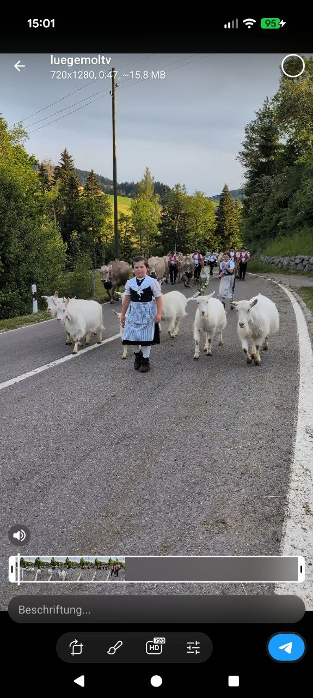
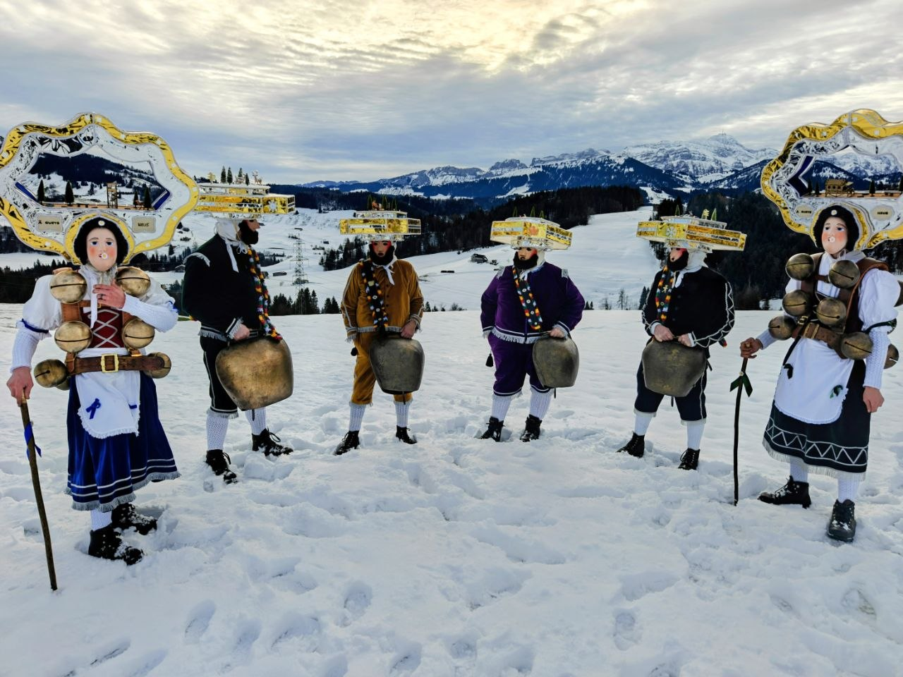
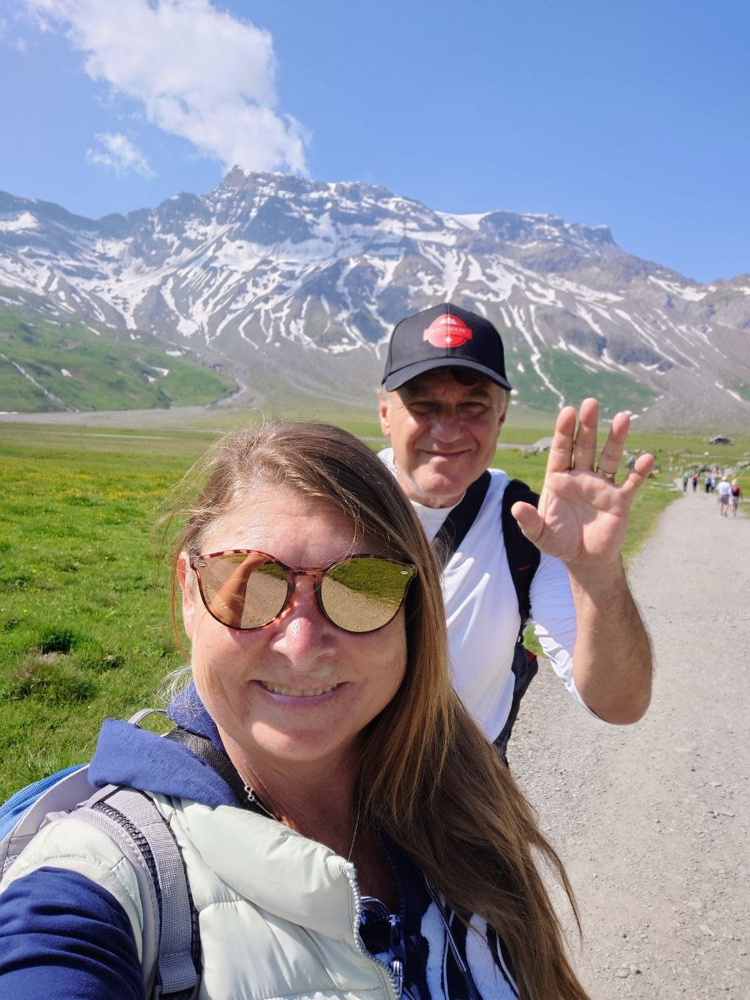

🐄 Alpaufzüge
🔔 Brauchtum
🌿 Schweizer NaturSchweizer Traditionen &
Brauchtümer erleben
Willkommen bei LuegemolTV – deinem Fenster zur traditionellen Schweiz. Wir begleiten Hirten bei Alpaufzügen im Appenzellerland, erleben das wilde Treiben der Fasnacht mit und lauschen dem Klang der Kuhglocken auf Alpweiden.
Jedes Video ist eine Liebeserklärung an die Schweizer Kultur: von den Eringerkühen im Val d'Hérens bis zu den Tschäggättä im Lötschental, vom Silvesterchlausen in Urnäsch bis zum Chästeilet im Justistal.
Gefilmt mit Leidenschaft in den Schweizer Bergen
Von Appenzell bis ins Wallis – echte Schweiz
Tradition bewahren und weitererzählen